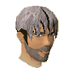
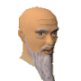
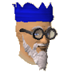

")
Fertigkeitsumhänge (Mitglieder)
Einführung | Wie ihr einen Fertigkeitsumhang bekommt | Fertigkeitserhöhung | Gesten der Fertigkeitsumhänge
Verzierte Fertigkeitsumhänge | Der Umhang der Abenteurer | Wenn ihr einen Fertigkeitsumhang verliert
Verzierte Fertigkeitsumhänge | Der Umhang der Abenteurer | Wenn ihr einen Fertigkeitsumhang verliert
Einführung
Ein Fertigkeitsumhang ist ein wunderschönes, prächtiges Gewand, hergestellt aus edlen Stoffen und nur für diejenigen erhältlich, die Meister einer Fertigkeit sind. Daher bekommt man sie selten zu sehen. Sie sind heiß begehrt bei denen, die noch keinen haben, und werden von den wenigen, die sie sich verdient haben, mit Stolz getragen.
Wie ihr einen Fertigkeitsumhang bekommt
Um stolzer Eigentümer eines Fertigkeits-Umhangs zu werden, müsst in einer bestimmten Fertigkeit die Stufe 99 erreicht haben. Nur durch harte Arbeit und Ausdauer ist es möglich, diese Stufe zu erreichen, aber wenn ihr das schafft, könnt ihr einen Fertigkeits-Umhang und eine Kapuze von einem der Meister auf RuneScape kaufen. Es gibt in jeder Fertigkeit nur einen Meister und diese tragen alle ihren jeweils eigenen Fertigkeitsumhang mitsamt Kapuze:
| Meister der Fertigkeit | Lage |
|  Ajjat - Meister des Angriffs |
In der Gilde der Krieger in Burthorpe. |
![[Bild]](../../img/main/kbase/npc/chathead/sloane.gif) Sloane - Meister der Stärke |
In der Gilde der Krieger in Burthorpe. |
![[Bild]](../../img/main/kbase/npc/chathead/harlan.gif) Ratgeber für Nahkampf - Meister der Verteidigung |
Bei den anderen Kampf-Ratgebern in Lumbridge. |
![[Bild]](../../img/main/kbase/npc/chathead/armour_salesman.gif) Rüstzeug-Verkäufer - Meister des Fernkampfs |
In der Gilde der Fernkämpfer in Hemenster. |
![[Bild]](../../img/main/kbase/npc/chathead/brother_jered.gif) Bruder Jered - Meister des Gebets |
In der obersten Etage des Klosters, nördlich des Barbarendorfes. |
![[Bild]](../../img/main/kbase/npc/chathead/robe_store_owner.gif) Robenladen-Besitzer - Meister der Magie |
Auf der mittleren Etage der Gilde der Magier in Yanille. |
![[Bild]](../../img/main/kbase/npc/chathead/aubury.gif) Aubury - Meister der Runenfertigung |
Im Runenladen, im Zentrum von Varrock. |
![[Bild]](../../img/main/kbase/npc/chathead/tafani.gif) Oberschwester Tafani - Meisterin der Lebenspunkte |
Im Krankenhaus der Duell-Arena, im Norden der Duell-Arena. |
![[Bild]](../../img/main/kbase/npc/chathead/cap_n_izzy.gif) Käpt'n Izzy Ohnebart - Meister der Gewandtheit |
Außerhalb der Gewandtheitsarena in Brimhaven, im Osten von Brimhaven. |
|  Kaqemeex - Meister der Pflanzenkunde |
Beim Guthix-Altar, im Norden von Taverley. |
![[Bild]](../../img/main/kbase/npc/chathead/martin_thwait.gif) Martin Thwait - Meister des Diebstahls |
Unten im "Die Kröte und das Huhn", im Räuberhort von Burthorpe. |
![[Bild]](../../img/main/kbase/npc/chathead/master_crafter.gif) Handwerksmeister - Meister des Handwerks |
In der Gilde der Handwerker, nördlich von Rimmington. |
![[Bild]](../../img/main/kbase/npc/chathead/hickton.gif) Hickton - Meister der Bognerei |
Im Bognereiladen in Catherby. |
![[Bild]](../../img/main/kbase/npc/chathead/kuradal.gif) Kuradal - Meisterin der Berserker |
In der uralten Höhle, unter dem Baxtorianischen See. |
![[Bild]](../../img/main/kbase/npc/chathead/hunting_expert.gif) Jagd-Expertin - Meisterin der Jagd |
In ihrer Hütte, südlich der Feldip-Hügel. |
![[Bild]](../../img/main/kbase/npc/chathead/estate_agent.gif) Immobilienmakler - Meister der Baukunst |
Im Nordosten von Varrock. |
![[Bild]](../../img/main/kbase/npc/chathead/mining_dwarf1.gif) Zwerg - Meister des Bergbaus |
Er bewacht die Leitern zur Gilde der Bergarbeiter im Südosten Faladors. |
![[Bild]](../../img/main/kbase/npc/chathead/thurgo1.gif) Thurgo - Meister im Schmieden |
In seiner Hütte, südlich von Port Sarim. |
![[Bild]](../../img/main/kbase/npc/chathead/master_fisher.gif) Meister-Fischer - Meister des Fischens |
Bei der Gilde der Fischer in Hemenster. |
![[Bild]](../../img/main/kbase/npc/chathead/head_chef.gif) Chefkoch - Meister des Kochens |
In der Gilde der Köche, westlich von Varrock. |
![[Bild]](../../img/main/kbase/npc/chathead/ignatius_vulcan.gif) Ignatius Vulkan - Meister des Funkenschlagens |
Er läuft durch den Wald, südlich des Dorfes der Seher. |
![[Bild]](../../img/main/kbase/npc/chathead/woodcutting_tutor.gif) Wilfred - Meister der Holzfällerei |
In der Nähe der Kreuzung, nördlich von Falador. |
![[Bild]](../../img/main/kbase/npc/chathead/martin_the_master_gardener.gif) Martin der Meistergärtner - Meister der Landwirtschaft |
Im Westen von Dorf Draynor. |
![[Bild]](../../img/main/kbase/npc/chathead/pikkupstix.gif) Stokufhex - Meister der Beschwörung |
Im Osten von Taverley. |
![[Bild]](../../img/main/kbase/npc/chathead/thok.gif) Thok der Kerkermeister |
Im Lager südlich von Daemonheim. |
|  Weiser, alter Mann - Meister der Abenteuerpunkte |
In seinem Haus in Dorf Draynor. |
Für die Fertigkeitsumhänge und die Kapuzen müsst ihr allerdings einen hohen Preis bezahlen. Die Materialien sind teuer und nur die besten Handwerker können sie herstellen. Deswegen verlangen die Meister 99.000 Goldstücke, um einen solchen Umhang abzugeben.
Fertigkeitserhöhung

Ihr könnt die Stufe in einer Fertigkeit auf 100 erhöhen, indem ihr auf den Umhang rechtsklickt und 'Bedienen ' auswählt oder indem ihr den Umhang entfernt und wieder anzieht, nachdem die Fertigkeitsstufe wieder auf 99 gesunken ist.
Dies gilt für alle Fertigkeitsumhänge mit Ausnahme der Umhänge für Lebenspunkte und für Gebet. Bei diesen ist es nur einmal pro Minute möglich, die maximale Stufe an Gebets- bzw. Trefferpunkten zu erreichen.
Zusätzlich gibt der Fertigkeitsumhang einen Bonus auf die Kampffertigkeiten. Wenn der Umhang verziert ist (siehe unten), gibt es auch noch einen Bonus in Gebet.
| Gegenstand | Anmerkungen | ||||||||||||||||||
| Angriffsboni | Verteidigungsboni | Sonstiges | |||||||||||||||||
![[Bild: Stechen]](../../img/main/kbase/table_text/stab1.gif "Stechen") |
![[Bild: Schlitzen]](../../img/main/kbase/table_text/slash1.gif "Schlitzen") |
![[Bild: Schmettern]](../../img/main/kbase/table_text/crush1.gif "Schmettern") |
![[image: Magie]](../../img/main/kbase/table_text/magic1.gif "Magie") |
![[Bild: Fernkampf]](../../img/main/kbase/table_text/range1.gif "Fernkampf") |
|
|
|
|
|
![[Bild: Beschwörung]](../../img/main/kbase/table_text/summoning1.gif "Beschwörung") |
![[Bild: Gebet]](../../img/main/kbase/table_text/prayer1.gif "Gebet") |
||||||||
![[Bild]](../../img/main/kbase/items/skillcapes/skillcape.gif) Fertigkeitsumhang Fertigkeitsumhang |
Verbesserungen des Fertigkeitsumhangs, nicht der Kapuze | + 0 | + 0 | + 0 | + 0 | + 0 | + 9 | + 9 | + 9 | + 9 | + 9 | + 9 | + 0 | + 0 | |||||
Die Gesten der Fertigkeitsumhänge
Wer einen Fertigkeitsumhang sein Eigen nennt, kann seine Freunde nicht nur mit den Schulterstacheln und den schicken Abzeichen beeindrucken, zu jedem Fertigkeitsumhang gehört zudem eine jeweils individuelle Geste. Diese findet ihr unten im Gesten-Menü.
Verzierte Fertigkeitsumhänge
Wer einen Fertigkeitsumhang kauft und bereits in zwei oder mehr Fähigkeiten auf Stufe 99 ist, wird feststellen, dass er eine 'verzierte' Version seines Umhangs erhält. Diese sehen etwas anders aus und geben demjenigen, der sie trägt, auch einen Bonus von +4 in Gebet, während sie den Umhang tragen.
Umhang der Abenteurer
![[Bild]](../../img/main/kbase/items/skillcapes/skillcape_worn.gif) Den Umhang der Abenteurer und die dazugehörige Kapuze können diejenigen bekommen, die alle Abenteuer abgeschlossen haben. Sie sind beim weisen, alten Mann in seinem Haus in Dorf Draynor erhältlich, für den königlichen Betrag von 99.000 Goldstücken.
Den Umhang der Abenteurer und die dazugehörige Kapuze können diejenigen bekommen, die alle Abenteuer abgeschlossen haben. Sie sind beim weisen, alten Mann in seinem Haus in Dorf Draynor erhältlich, für den königlichen Betrag von 99.000 Goldstücken.RuneScape ist voller Gefahren, und es wird immer nach Meistern Ausschau gehalten, die die Welt von Gefahren befreien können. Daher ist es unvermeidbar, dass neue Abenteuer veröffentlicht werden, während das Spiel voranschreitet. Wenn ihr euch in das Spiel einloggt, nachdem ein neues Abenteuer veröffentlicht wurde, erhaltet ihr, wenn ihr einen Umhang der Abenteurer tragt, eine Warnung, dass dieser automatisch entfernt wurde.
Der Umhang der Abenteurer und die Kapuze können so lange nicht getragen werden, bis das Abenteuer abgeschlossen wurde. Dann werdet ihr aber feststellen, dass ihr sie wieder tragen könnt. Wenn ihr im Inventar keinen Platz für den Umhang der Abenteurer habt, wird er, so lange ihr ihn nicht tragen könnt, in eurem Bankschließfach gelagert. Wenn es dort auch keinen Platz gibt, dann müsst ihr zum weisen, alten Mann zurückkehren, um ihn kostenlos wiederzubekommen.
Bitte beachtet: Um den Umhang der Abenteurer zu bekommen, müsst ihr jeden Teil jedes Abenteuers fertiggestellt haben und alle notwendigen Abenteuerpunkte erhalten haben.
Wenn ihr einen Fertigkeitsumhang verliert
Fertigkeitsumhang und Kapuze sind wertvolle Gegenstände und ihr könnt sie nur in extremen Situationen verlieren (außer ihr zerstört sie absichtlich). Um einen Fertigkeitsumhang und die Kapuze zurückzubekommen, müsst ihr erneut den Meister der jeweiligen Fertigkeit aufsuchen und noch einmal die 99.000 Goldstücke bezahlen.
Weitere Informationen über Umhänge findet ihr hier.

Weitere Artikel in Diverse Anleitungen
|
|
|
Weiterführende Informationen Wenn euch dieser Artikel nicht weitergeholfen hat, könnt ihr in den folgenden Kapiteln der RuneScape-Webseite mehr Informationen finden:
|
|